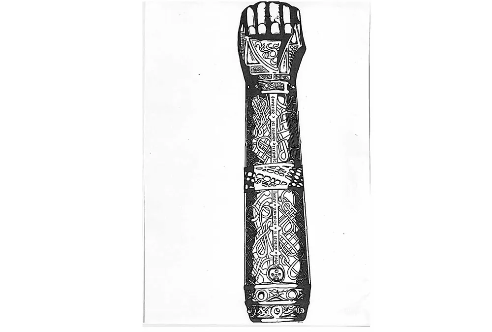

| Box Number | Subject | Id No. | Box Colour | Author | Title | ISBN Number | Our Barcode Number | Status |
|---|---|---|---|---|---|---|---|---|
| Box 01: | Ballinagree | 01 | Bright Green | Casey, Jerome | Bowling Down London Way | |||
| Box 01: | Ballinagree | 02 | Bright Green | O'Donoghue, Dan | Hold Your Horses! | |||
| Box 01: | Ballinagree | 03 | Bright Green | Ballinagree N.S | Tales Of The Launey Valley. Ballinagree N.S 1898 - 1998 | |||
| Box 01: | Ballinagree | 04 | Bright Green | O'Brien, Barry | The Song And Poems Of The Launey Valley | |||
| Box 01: | Ballinagree | 05 | Bright Green | O'Connor, Jerry Neilus | 'Tales of Yore' From Ballinagree | |||
| Box 01: | Ballinagree | 06 | Bright Green | Ballyvongane N.S | Ballyvongane N.S 1845 - 1995 | |||
| Box 02: | Blarney | 01 | Bright Green | Journal Of The Blarney and District Historical Society | Old Blarney Number One | |||
| Box 02: | Blarney | 02 | Bright Green | Journal Of The Blarney and District Historical Society | Old Blarney Number Two | |||
| Box 02: | Blarney | 03 | Bright Green | Journal Of The Blarney and District Historical Society | Old Blarney Number Three | |||
| Box 02: | Blarney | 04 | Bright Green | Journal Of The Blarney and District Historical Society | Old Blarney Number Four | |||
| Box 02: | Blarney | 05 | Bright Green | Journal Of The Blarney and District Historical Society | Old Blarney Number Five | |||
| Box 02: | Blarney | 06 | Bright Green | Journal Of The Blarney and District Historical Society | Old Blarney Number Six | |||
| Box 02: | Blarney | 07 | Bright Green | Journal Of The Blarney and District Historical Society | Old Blarney Number Seven | |||
| Box 02: | Blarney | 08 | Bright Green | Journal Of The Blarney and District Historical Society | Old Blarney Number Eight | |||
| Box 02: | Blarney | 09 | Bright Green | Journal Of The Blarney and District Historical Society | Old Blarney Number Nine | |||
| Box 02: | Blarney | 10 | Bright Green | Journal Of The Blarney and District Historical Society | Old Blarney Number Thirteen | |||
| Box 02: | Blarney | 11 | Bright Green | Motte, David B. | The Gift Of Blarney | 2370001781610 | ||
| Box 03: | Cill Na Martra | 01 | Bright Green | Muscrai Committee | Muscrai | |||
| Box 03: | Cill Na Martra | 02 | Bright Green | Murphy, Donal | Tuath na Dromann | 1906018618 | ||
| Box 03: | Cill Na Martra | 03 | Bright Green | Coiste Forbartha Cill Na Martra | Cill Na Martra Muscrai Co Chorcai | |||
| Box 03: | Cill Na Martra | 04 | Bright Green | Coiste Forbartha Cill Na Martra(copy) | Cill Na Martra Muscrai Co Chorcai | |||
| Box 03: | Cill Na Martra | 05 | Bright Green | MacSuibhne, Daithi Agus Sean | Sli Na Staire i gCill Na Martra Historical Byways | |||
| Box 03: | Cill Na Martra | 06 | Bright Green | Buhagiar, Alexandra | The Baldwins Of Lisnagat | 1911338544 | ||
| Box 03: | Cill na Martra | 07 | Bright Green | FitzGerald, John | The Lament Of Art O'Leary | |||
| Box 04: | Kilmurry | 01 | Bright Green | Goulding, Bridget | Kilmurry Fields | 0995561303 | ||
| Box 04: | Kilmurry | 02 | Bright Green | Goulding, Bridget | Fallen Leaves | 0995561338 | ||
| Box 05: | Kilmurry | 01 | Bright Green | Galvin, Michael | The Morning Star Land Reform Labour Home Rule In Mid Cork 1822 - 1891 Vol. II | |||
| Box 05: | Kilmurry | 02 | Bright Green | Galvin, Michael | The Green Trinity Land Reform Labour Home Rule In Mid Cork 1982 - 1899 Vol. III | |||
| Box 05: | Kilmurry | 03 | Bright Green | Galvin, Michael | The Soaring Eagle Land Reform Labour Home Rule In Mid Cork 1900 - 1903 Vol. IV | |||
| Box 05: | Kilmurry | 04 | Bright Green | Galvin, Michael | In The Shaddow Of War 1939 - 1945 | |||
| Box 05: | Kilmurry | 05 | Bright Green | Galvin, Michael M. | 1906 - 1910: People And Politics | |||
| Box 06: | Macroom | 01 | Bright Green | O'Brien, Barry | Macroom A Chronicle No. 01 'Sweet Town Of Macroom' | |||
| Box 06: | Macroom | 02 | Bright Green | O'Brien, Barry | Macroom A Chronicle No. 02 'Sweet Town Of Macroom' | |||
| Box 06: | Macroom | 03 | Bright Green | O'Brien, Barry | Macroom A Chronicle No. 03 'Sweet Town Of Macroom' | |||
| Box 06: | Macroom | 04 | Bright Green | O'Brien, Barry | Macroom A Chronicle No. 04 The Penn Family Of Macroom, Midleton And Pennsylvania | |||
| Box 06: | Macroom | 05 | Bright Green | O'Brien, Barry | Macroom A Chronicle No. 05 The Briery Gap Theatre And Library | |||
| Box 06: | Macroom | 06 | Bright Green | O'Brien, Barry | Macroom A Chronicle No. 06 The Square, Macroom Early 1900s' | |||
| Box 06: | Macroom | 07 | Bright Green | O'Brien, Barry | Macroom A Chronicle No. 07 Earliest Postcard Of Main Street, Macroom | |||
| Box 06: | Macroom | 08 | Bright Green | O'Brien, Barry | Macroom A Chronicle No. 08 A Remarkable View Of Macroom - Early 1900s | |||
| Box 06: | Macroom | 09 | Bright Green | O'Brien, Barry | Macroom A Chronicle No. 09 Convent Of Mercy, Macroom 1865 -2012 | |||
| Box 06: | Macroom | 10 | Bright Green | O'Brien, Barry | Macroom A Chronicle No. 10 'Sweet Town Of Macroom' | |||
| Box 06: | Macroom | 11 | Bright Green | O'Brien, Barry | Macroom A Chronicle No. 11 'Sweet Town Of Macroom' | |||
| Box 06: | Macroom | 12 | Bright Green | O'Brien, Barry | Macroom A Chronicle No. 12 'Sweet Town Of Macroom' | |||
| Box 06: | Macroom | 13 | Bright Green | O'Brien, Barry | Macroom A Chronicle No. 13 'Sweet Town Of Macroom' | |||
| Box 06: | Macroom | 14 | Bright Green | O'Brien, Barry | Macroom A Chronicle No. 14 'Sweet Town Of Macroom' | |||
| Box 07: | Macroom | 01 | Bright Green | County Council | St. Coleman's Church Of Ireland | |||
| Box 07: | Macroom | 02 | Bright Green | Payne, James And George | Macroom Church Notes | |||
| Box 07: | Macroom | 03 | Bright Green | Desmond, Patrick | Notes On Macroom District Part 01. | |||
| Box 07: | Macroom | 04 | Bright Green | Desmond, Patrick | Notes On Macroom District Part 02. | |||
| Box 07: | Macroom | 05 | Bright Green | Corcoran, Bernie | A Guide To Macroom | |||
| Box 07: | Macroom | 06 | Bright Green | Council, Cork County | Macroom Historic Town | |||
| Box 07: | Macroom | 07 | Bright Green | Everett, Katherine | Bricks And Flowers | |||
| Box 07: | Macroom | 08 | Bright Green | Kelleher, Dr. Con | Macroom Union Workhouse 1843 - 1921 ( & Other Pieces) | 1527243273 | ||
| Box 07: | Macroom | 09 | Bright Green | Kelleher, Dr. Con | Macroom And District Past And Present | 1908378522 | ||
| Box 07: | Macroom | 10 | Bright Green | Ring, Denis Paul | Macroom Through The Mists Of Time | |||
| Box 08: | Macroom | 01 | Bright Green | Hepburn, Elsa | The Brownes Of Coolcower | |||
| Box 08: | Macroom | 02 | Bright Green | Murray, T. C. | Spring Horizon | |||
| Box 08: | Macroom | 03 | Bright Green | Macroom Historical Society | United Irishmen In Macroom 1798 -1803 | |||
| Box 09: | Mallow | 01 | Bright Green | Council, Heritage | Mallow Town Centre Heritage-Led Regeneration & Public Realm Study Final Report Volume 02: Appendices 4 -7 May 2009 | |||
| Box 09: | Mallow | 02 | Bright Green | Council, Heritage | Mallow Town Centre Heritage-Led Regeneration & Public Realm Study Final Report May 2009 | |||
| Box 09: | Mallow | 03 | Bright Green | Council, Heritage | Mallow Castle House & Demesne Conservation Plan | |||
| Box 09: | Mallow | 04 | Bright Green | Mallow Archaeological & Historical Society | Mallow Field Club Journal Index | |||
| Box 09: | Mallow | 05 | Bright Green | Council, Heritage | Heritage As An Engine Of Economic Growth In Mid-Sized Towns | |||
| Box 09: | Mallow | 06 | Bright Green | Tomas Davis Committee | Comoradh Thomais Daibhis 2005 Memorial Evening 1814 - 1845 | |||
| Box 09: | Mallow | 07 | Bright Green | Bolster, Evelyn | Mallow | |||
| Box 10: | Aghabullogue, Coachford, Rylane & Dripsey | 01 | Bright Green | Sheehan, Tim | Lady Hostage (Mrs. Lindsey) | |||
| Box 10: | Aghabullogue, Coachford, Rylane & Dripsey | 02 | Bright Green | Sheehan, Tim | Execute Hostage Compton - Smith | |||
| Box 10: | Aghabullogue, Coachford, Rylane & Dripsey | 03 | Bright Green | O'Mahony, Mary | Dripsey Ambush 1921 Executions And Reprisals | |||
| Box 10: | Aghabullogue, Coachford, Rylane & Dripsey | 04 | Bright Green | Sheridan, Michael | Murder At Shandy Hall | 1842234730 | ||
| Box 10 | Aghabullogue, Coachford, Rylane & Dripsey | 05 | Bright Green | Rylane National School | Scoil Naisiunta Reidhleain - Cead Bliain Ag Fas 1914 -2014 | |||
| Box 11: | Donoughmore | 01 | Bright Green | Henchion, Richard | Donoughmore & All Around | 0956632300 | ||
| Box 11: | Donoughmore | 02 | Bright Green | Historical, Donoughmore | Donoughmore Remembers Vol. 02 | 9771649523007 | ||
| Box 11: | Donoughmore | 03 | Bright Green | Crofton, Rev. H V. | Crofton Paper Index | |||
| Box 12: | Millstreet/Aubane | 01 | Bright Green | Historical Society, Aubane | A Millstreet Miscellany 02 (2005) | 190349723X | ||
| Box 12: | Millstreet/Aubane | 02 | Bright Green | Historical Society, Aubane | A Millstreet Miscellany 03 (2010) | 1903497604 | ||
| Box 12: | Millstreet/Aubane | 03 | Bright Green | Historical Society, Aubane | The Farmed Hill Of Clara (2009) | 9781903497593 | ||
| Box 12: | Millstreet/Aubane | 04 | Bright Green | Historical Society, Aubane | King Mahon's Rock | |||
| Box 12: | Millstreet/Aubane | 05 | Bright Green | Aubane Historical Society | 250 Years Of The Butter Road: 1st May 1748 - 1st May 1998 | |||
| Box 12: | Millstreet/Aubane | 06 | Bright Green | Historical Society, Aubane | Canon Sheehan | |||
| Box 12: | Millstreet/Aubane | 07 | Bright Green | Historical Society, Aubane | William O'Brien | |||
| Box 12: | Millstreet/Aubane | 08 | Bright Green | Dinneen, Joseph | The Story Of The Moving Bog | 1903497523 | ||
| Box 12: | Millstreet/Aubane | 09 | Bright Green | Lane, Jack | Aubane: Where In The World Is It? A Microcosm Of Irish History In A Cork Townland | 0952108178 | ||
| Box 12: | Millstreet/Aubane | 10 | Bright Green | Historical Society, Aubane | The Cork Free Press In The Context Of The Parnell Split: The Restructuring Of Ireland 1890 - 1910 | 0952108160 | ||
| Box 13: | Lee Valley | 01 | Bright Green | O'Connell, Josephine | The Gearagh A Community & Oak Forest Lost Forever | 0956056202 | ||
| Box 13: | Lee Valley | 02 | Bright Green | O'Donoghue, Seamus | The Flooding Of The Lee Valley: The Lee Hydro-Electric Scheme | 0902568264 | ||
| Box 13: | Lee Valley | 03 | Bright Green | Allen, Alfred | 'Not Under Oath' Alfie Allen Remembers | 0902568299 | ||
| Box 13: | Lee Valley | 04 | Bright Green | Allen, Alfred | A Mist In Moonlight | 0902568205 | ||
| Box 13: | Lee Valley | 05 | Bright Green | Kelleher, Pat | Bishop's Island | |||
| Box 13: | Lee Valley | 06 | Bright Green | Milner, Liam | The River Lee And Its Tributaries | |||
| Box 13: | Lee Valley | 07 | Bright Green | Carrigadrohid Killinardrish Tidy Towns | Traditional Farm Buildings | |||
| Box 13: | Lee Valley | 08 | Bright Green | O'Rourke, Alan Daniel | Inchigeelagh Church | |||
| Box 13: | Lee Valley | 09 | Bright Green | McGlasgan, James | The Dublin University Magazine A Literary And Political Journal Volume XXXI (One Chapter) | |||
| Box 13: | Lee Valley | 10 | Bright Green | O'Donovan, Dermot | A Vanishing Village: Recollections Of Ballincollig In Times Past | 0902568388 | ||
| Box 14: | West Cork | 01 | Bright Green | Doyle, Kieran | Behind The Wall | 1526201429 | ||
| Box 14: | West Cork | 02 | Bright Green | McCarthy, Con | Desertserges | 1999321200 | ||
| Box 14: | West Cork | 03 | Bright Green | Doyle, Kieran & O'Rourke, Alan | Monuments Of Our Past | 1399909274 | ||
| Box 14: | West Cork | 04 | Bright Green | Cronin, Colum | The Evolving Narrative Around The Kilmichael Ambush |